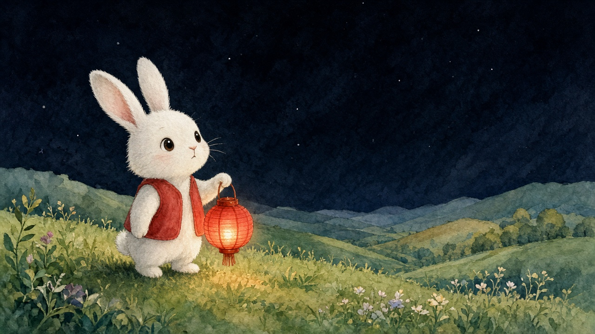
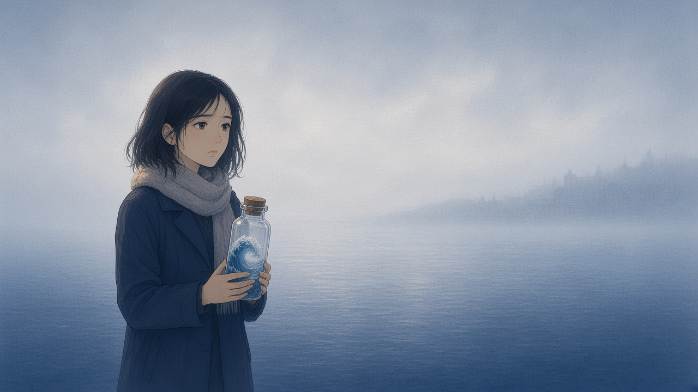

STORYBOOK VIDEO
把一段故事，
做成會說話的繪本影片
一個用雲端 AI 模型製作有聲故事書影片的命令列工具。AI 負責分鏡、插圖與配音動畫， 每一頁都經過人工查看與確認，最後合成完整影片。
作品

小燈籠找月亮
3 頁 · 38 秒

玻璃海
8 頁 · 1 分 15 秒
製作流程
- 故事文字準備一段故事
- AI 分鏡拆成頁面、旁白與畫面描述
- 生成插圖每頁一張，畫風一致
- 人工確認預覽、修改、逐頁確認
- 有聲影片插圖動起來，旁白與台詞同步生成
- 合成成片依序接起並加上背景音樂
設計重點
確認後才生成影片
影片只會用人工確認過的圖片與講稿生成；任何修改都會讓該頁需要重新確認，其他頁不受影響。
避免重複計費
已提交的任務先查詢、不重送；結果不明時記錄下來，由人決定是否重做。
每個版本都保留
圖片、影片、成品都另存新版本，不覆蓋舊檔，隨時可以回頭比較。
內建聲音
旁白與角色台詞由影片模型直接生成，角色開口時嘴型同步。
技術
Python 3.11+、Typer（CLI）、Pydantic（資料驗證）、httpx（xAI REST API）、FFmpeg（合成）、pytest。 模型：Grok 4.7 分鏡、Grok Imagine Image 2.0 插圖、Grok Imagine Video 1.5 Lite 有聲影片。 詳細說明見 README。